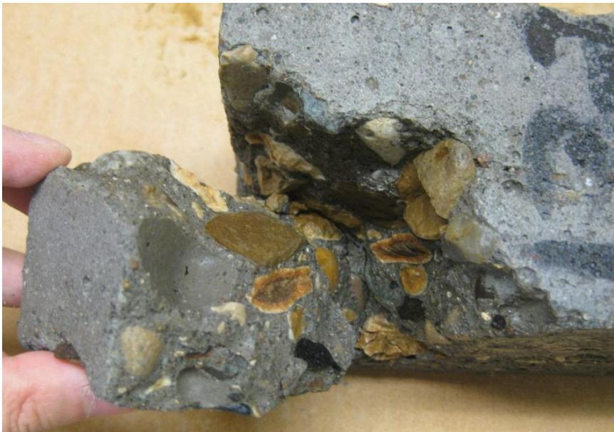
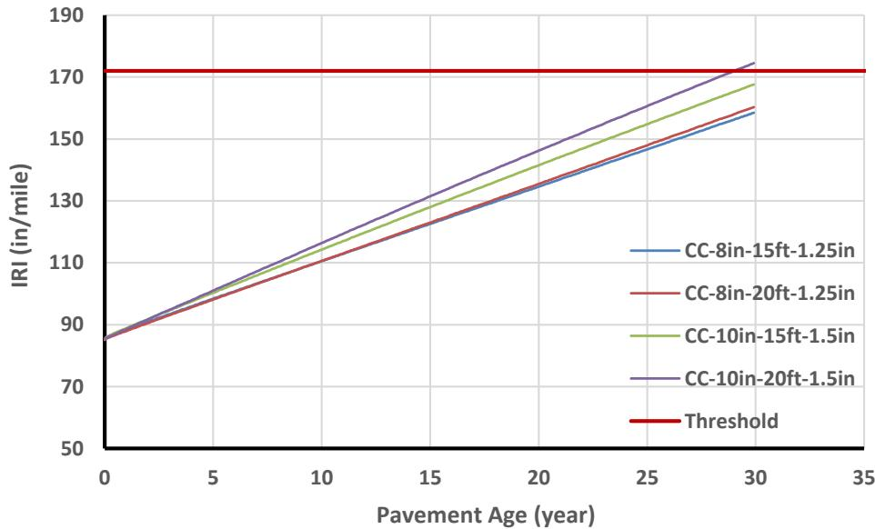
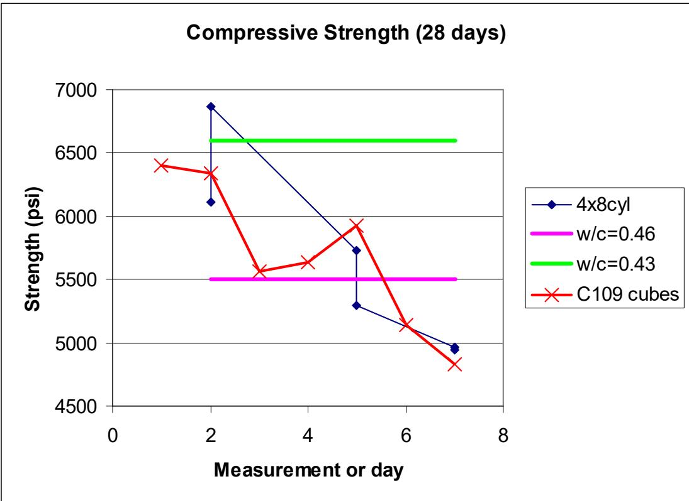
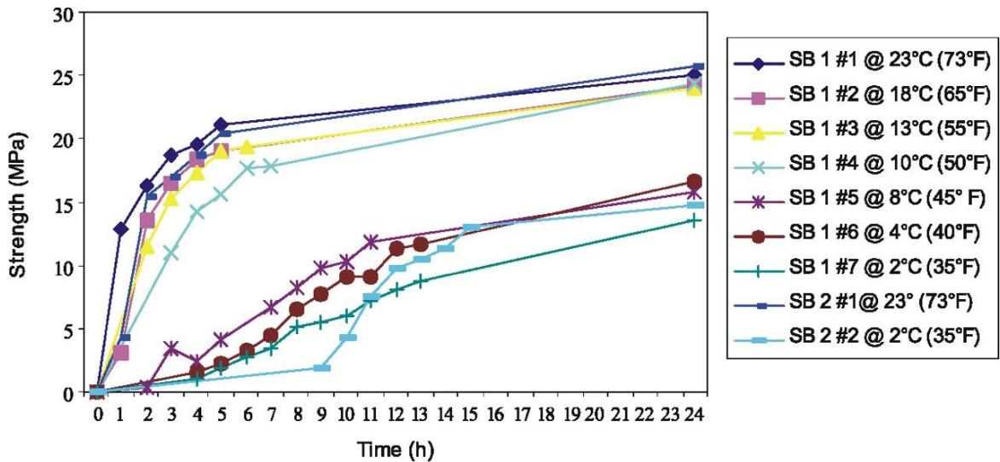
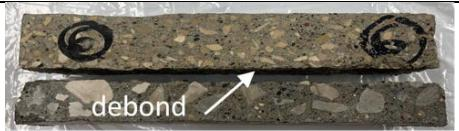

High-Performance Concrete
High-performance concrete (HPC) is a type of Mix Design & Specialty Mixture designed to achieve enhanced durability, strength, and service life beyond conventional concrete specifications. In bridge applications, HPC often incorporates supplementary cementitious materials, optimized mix proportions, and specialized curing techniques. It achieves high durability by incorporating supplementary cementitious materials like silica fume or fly ash [2]. These materials refine the pore structure and reduce permeability through pozzolanic reactions, resulting in a denser paste [2].
Sources (11)
Buchanan County IBRD Bridge Mix Design
The HPC used for the cast-on-site box beams incorporated Internal Curing via Lightweight Aggregate (Buildex fine aggregate at 21% replacement). [1]
Mix Proportions (per cubic yard)
| Material | Weight (lbs) | |----------|-------------| | Portland Cement | 356 | | GGBFS | 119 | | Fly Ash (Class C) | 119 | | Coarse Aggregate | 1,504 | | Sand Fine Aggregate | 1,072 | | Buildex Fine Aggregate (LWFA) | 311 | | Water | 222 | | Aggregate Surface Moisture | 33 | | Total | 3,702 |
Key Properties
- 28-day compressive strength: 6,870 psi (ASTM C39), exceeding 4,000 psi requirement
- Surface resistivity: 13.90 kΩ-cm (moderate range per AASHTO TP 95)
- Weight reduction: ~5% lighter than conventional concrete due to LWFA
- Air content: 6.00% as-mixed, 4.5–5% at placement
- Slump: 5–6 in. as-mixed, 4–5 in. at placement
- Fresh density: 137.1 lbs/ft³ (before pumping), 138.6 lbs/ft³ (after pumping)
- w/cm ratio: 0.43
Performance Benefits
- Higher compressive strength than conventional concrete
- Slightly lower beam weight (5% reduction) facilitating construction
- Improved durability through internal curing extending cement hydration
- Reduced risk of shrinkage cracking
The use of high contents of slag and fly ash in concrete mixtures enables longer flow distances and extended retention of flowability, which is particularly beneficial for placing underwater bridge footings. [2]
A ternary blended cement containing GGBFS and fly ash can achieve a low adiabatic temperature rise of 47.9°C, representing approximately a 75% reduction compared to normal Portland cement concrete. [2]
In aggressive chloride environments, the optimum replacement rate for fly ash is approximately 40%, whereas this rate decreases to 30% in mild chloride conditions. [2]
To produce concrete containing GGBFS that is resistant to harsh chloride environments, a 50% replacement rate of the cementitious material is required. [2]
Concrete mixtures incorporating silica fume demonstrate the greatest reduction in chloride penetration depth, followed by those with GGBFS and then fly ash. [2]
Metakaolin concrete heat of hydration curves can closely match those of normal Portland cement when metakaolin is incorporated at amounts less than 10% by weight. [2]
 Strength gain for mortar mixtures containing metakaolin [2]
Strength gain for mortar mixtures containing metakaolin [2]
Increasing fly ash content in mixtures with 50% total replacement (40% fly ash and 10% rice husk ash) produces more workable concrete, while the introduction of rice husk ash significantly reduces bleeding. [2]
High replacement rates of fly ash can reduce resistance to deicer salt scaling, even when concrete is produced with reduced water-to-cementitious material ratios. [2]
Carbonation rates in concrete containing pozzolanic reactions proceed quickly initially but then slow rapidly due to the formation of a denser pore structure. [2]
The limiting water-to-binder ratio for non-air entrained high-performance concrete to achieve freeze-thaw durability is approximately 0.26 for Type IP cement and 0.19 for mixtures containing Class C fly ash, though the lower limit is generally considered unattainable in field construction. Without air entrainment, achieving sufficient frost resistance typically requires a 28-day compressive strength of at least 70.7 MPa (10,246 psi) for fly ash blends and 82 MPa (11,880 psi) for IP cement. [3]
 Durability factor as a function of w/b [3]
Durability factor as a function of w/b [3]
When air entrainment is utilized to ensure freeze-thaw durability in high-performance concrete, the effectiveness depends primarily on the air void system rather than the cementitious material type; specifications require an air content of at least 6% (measured by ASTM C231) with a spacing factor of 0.28 mm or less when measured using AVA, or 0.22 mm or less when measured using RapidAir. [3]
 Relationship between durability factor and % air, by ASTM 231, of air entrained samples [3]
Relationship between durability factor and % air, by ASTM 231, of air entrained samples [3]
Internal curing with lightweight fine aggregate reduces the chloride diffusion rate by approximately 10% compared to conventional mixtures, as evidenced by extrapolated values of 1.3079E-8 in.2/sec versus 1.4532E-8 in.2/sec at 28 days. [4]
The enhanced hydration from internal curing increases the chloride binding capacity ‘m’ term to 0.52 compared to 0.47 for control mixtures, which lowers long-term diffusivity and extends predicted service life by approximately 20 years. [4]
Internal curing promotes more efficient hydration of supplementary cementitious materials like fly ash and slag cement, resulting in reduced autogenous shrinkage, lower permeability, and increased strength. [4]
Secondary ettringite formation within air voids near concrete joints can render the air-void system ineffective against freeze-thaw damage by filling the smaller entrained-sized void spaces, particularly when saturated with deicer solutions. This infilling process occurs during saturation and progressively compromises durability even in originally well-consolidated, purposefully air-entrained concrete. [5]
 #2 DESCRIPTION: Much of the finer air voidspaces in the concrete paste, proximate to the joint distress and at 55mm depth in the core, are filled with secondary ettringite 5x [5]
#2 DESCRIPTION: Much of the finer air voidspaces in the concrete paste, proximate to the joint distress and at 55mm depth in the core, are filled with secondary ettringite 5x [5]
The presence of deicing salts in aqueous solutions increases surface tension and viscosity while decreasing water activity compared to pure water, which alters the absorption process and equilibrium relative humidity within the concrete pore structure. These changes influence the degree of saturation at joints over time, potentially accelerating deterioration mechanisms. [5]
Failures in high-performance concrete near joints often include cracks propagating through and around aggregate particles, with failures around aggregates likely associated with the interfacial transition zone (ITZ). This mechanism is particularly relevant when stress occurs adjacent to surfaces exposed to deicing salts. [5]

Laboratory observation of distress incurred during freezing and thawing [5]The use of lightweight fine aggregates for internal curing in high-performance concrete can reduce the beam weight by approximately 5% compared to conventional concrete, facilitating easier handling during construction. [1]
Internal curing concrete exhibits a lower coefficient of thermal expansion (CTE) and modulus of elasticity (MoE), which mitigates the negative effects of increasing joint spacing on distress performance over time. These properties, combined with higher compressive strength and lower ultimate shrinkage, allow for reduced pavement thickness or increased maintenance intervals. [6]
Mechanistic-empirical pavement design using IC concrete can reduce minimum required slab thickness by 1 inch for both 8-inch and 10-inch baseline designs while maintaining equivalent performance limits over a 30-year service life. This reduction compensates for the approximately 3.2% higher initial construction costs associated with internally cured mixtures. [6]

IRI of conventionally cured pavements over design life [6]Internally cured pavements demonstrate improved resistance to transverse cracking when joint spacing is increased from 15 ft to 20 ft, as the reduced CTE and MoE offset the increased stress associated with wider joints. This allows for design flexibility in joint placement without compromising long-term distress performance. [6]
 IRI of internally cured pavements over design life [6]
IRI of internally cured pavements over design life [6]
Life cycle cost analysis indicates that internally cured pavements achieve a lower net present value (NPV) than conventionally cured alternatives, with savings ranging from 0.84% to 3.3% depending on traffic volume and discount rate assumptions. These economic benefits are driven by reduced material usage through thinner sections and decreased long-term maintenance requirements. [6]
Sensitivity analysis reveals that the economic advantage of internally cured concrete is highly dependent on maintenance cost assumptions; a 20% increase in maintenance costs still results in positive net savings, though the magnitude of NPV reduction decreases significantly compared to baseline scenarios. [6]
While SAPs enhance hydration through internal curing, their incorporation typically reduces compressive strength by approximately 8% at 28 days due to the voids left after the polymer particles release their stored water. [7]
Slipform paving applications for high-performance concrete generally target a plastic air content between 6% and 9%, with post-paver air content typically maintained around 6% ± 1% to ensure frost resistance. [8]
Two-Lift Pavement Systems
In two-lift concrete pavement systems, the top lift utilizes a lower water-to-cement ratio mix than the base layer without experiencing debonding between the layers. This stratified approach allows for enhanced wear resistance by placing a different aggregate in the surface layer. [9]
Experimental two-lift pavements have successfully incorporated up to 40% recycled asphalt into the base course, though this addition requires careful management of air entrainment content. The lower quality concrete from existing composite pavements can also be recycled as aggregate in the final top lift. [9]
Successful two-lift construction requires precise timing, as waiting 30 to 60 minutes before placing the second lift helps prevent mixing of the two concretes. The bottom lift is typically placed with a spreader box while the top lift uses a slip-form paver. [9]
The economic viability of two-lift paving is constrained by additional costs for dual plants, equipment, and labor, often making it twice as expensive as conventional concrete pavement. The process also carries higher risks of operational breakdowns compared to one-lift applications. [9]
Material Variability
Incorporating supplementary cementitious materials like fly ash introduces material variability concerns, as different sources can alter concrete behavior and require careful management to avoid performance issues. [8]
Superabsorbent polymers (SAPs) can mitigate plastic shrinkage cracking by replacing surface water lost to evaporation, though their absorbency rate directly influences fresh concrete workability as gel-like structures alter internal water distribution. [7]
 Effects of SAP on the slump of concrete for (a) SAP-a and (b) SAP-b, where Sa-0 is dry and Sa-10 is pre-absorbed (particle size: SAP-a > SAP-b) [7]
Effects of SAP on the slump of concrete for (a) SAP-a and (b) SAP-b, where Sa-0 is dry and Sa-10 is pre-absorbed (particle size: SAP-a > SAP-b) [7]
SAP-containing mixtures exhibit higher secondary water absorption indexes than control concrete due to increased porosity and pore connectivity, reflecting greater permeability despite improved hydration. [7]
 Absorption of various SAPs in cement pore solution [7]
Absorption of various SAPs in cement pore solution [7]
SAPs can swell and fill cracks up to 100 μm wide if water penetrates the system, thereby decreasing the permeability of healed cracks through their ability to improve pore size distribution. [7]
Fly ash availability can be a significant logistical constraint for high-performance concrete production due to its nature as an industrial by-product with limited long-term storage capabilities. [8]
Mixing Optimization
Optimal mixing procedures for high-performance concrete often require specific admixture addition sequences, such as adding superplasticizers in water as a single dose with sufficient mixing time to enhance their function. [8]
An increase in the fineness of cementitious materials necessitates an increased dosage of superplasticizer to achieve desired workability. [2]
Lightweight fine aggregate particles must be soaked for 48 hours and drained overnight before mixing to function effectively as internal water reservoirs. [4]
Internal curing is particularly critical in low w/cm ratio mixtures where the initial batch water is insufficient to fully hydrate all cement particles. [4]
Mixing Time Effects
Prolonged mixing times can cause slump loss, which contractors may attempt to correct by retempering with water or superplasticizers, though adding water tends to lower compressive strength due to changes in the water-cement ratio. [8]

Illustration of compressive strength versus time for Site 1 [8]The addition of SAPs can delay both initial and final setting times relative to control mixtures, likely resulting from an increase in the effective water-to-cement ratio due to insufficient absorption during mixing. [7]
High-performance concrete mixtures typically require a minimum mixing time of 60 seconds or greater to positively influence physical characteristics, including hardened air content distribution and potential segregation resistance. [8]
Potential Applications
Internal curing with expanded slag aggregate has been successfully applied to high early-strength concrete pavement patches, providing reduced built-in stress from restrained shrinkage and extended water curing after traffic opening. [10]
Research is evaluating internally cured concrete for continuously reinforced concrete pavement (CRCP), whitetopping, and ultra-thin whitetopping (UTW) applications to reduce built-in stress associated with moisture gradients. [10]
Batching Procedures
Proper batching procedures require lightweight fine aggregate to be batched first and turned prior to and during mixing to ensure uniform moisture distribution. [10]
Cold-weather operations for internally cured concrete require covering freshly placed concrete and forms to maintain an enclosure temperature above 50°F until a maturity equivalent to seven days at 70°F is achieved. [10]
Latex-Modified Concrete (LMC) Overlays
Latex-modified concrete (LMC-VE) overlays can achieve bond strengths exceeding 250 psi when tested against hydrodemolition-prepared substrates, a threshold classified as “very good” and adequate for structural integrity. This high adhesion is critical for maintaining the overlay’s durability under traffic loads. [11]
The rapid heat generation occurring between hours 5 and 10 of cement hydration in LMC-VE overlays can lead to early-age thermal cracking if not managed. Mitigation strategies include monitoring placement temperatures and adjusting mix proportions, such as reducing latex or citric acid content, to slow the initial exothermic reaction. [11]

Influence of curing temperature on the strength development of two batches (SB1 and SB2) of LMC-VE [11]LMC-VE overlays exhibit higher secondary sorptivity at 28 days compared to conventional HPC used in bridge decks, which can compromise freeze-thaw resistance and lead to surface spalling. This increased water uptake is attributed to an improper pore structure resulting from chemical interactions between the cement, latex, citric acid, and deicing salts. [11]

Deterioration of LMC-VE-only (middle column) and LMC-VE-overlaid (right column) test specimens due to freeze-thaw cycles (left column) [11]Life-cycle cost analysis establishes a traffic volume threshold of 3,300 Average Annual Daily Traffic (AADT), above which the total life-cycle cost of an LMC-VE overlay becomes lower than that of conventional HPC or polymer overlays. This economic advantage is driven by significantly reduced user costs from faster traffic reopening times, despite the higher initial agency construction costs. [11]
 Determining AADT threshold for LMC-VE overlay [11]
Determining AADT threshold for LMC-VE overlay [11]
Connections
- Internal Curing — Key technology enabling the HPC performance
- Lightweight Aggregate — Buildex fine aggregate used for internal water reservoirs
- Geosynthetic-Reinforced Soil Abutments — Foundation system supporting HPC beams
- Cast-On-Site Box Beam Superstructure — Application of HPC in cast-on-site construction
- Concrete Curing — Complementary external curing also applied
- Mix Design & Specialty Mixtures
References
- B. Phares, T. Hosteng, L. Greimann, and A. Pakhale, "Evaluation of the Buchanan County IBRD Bridge on Victor Avenue over Prairie Creek," Bridge Engineering Center, Ames, IA, Rep. InTrans Project 12-427, 2017. [Online]. Available: https://www.intrans.iastate.edu/wp-content/uploads/2018/03/Victor_Ave_over_Prairie_Creek_IBRD_bridge_eval_w_cvr.pdf
- P. Tikalsky, V. Schaefer, K. Wang, B. Scheetz, T. Rupnow, A. St. Clair, M. Siddiqi, and S. Marquez, "Development of Performance Properties of Ternary Mixes, Phase 1," Center for Transportation Research and Education, Ames, IA, Rep. TPF-5(117), 2007. [Online]. Available: https://www.intrans.iastate.edu/research/completed/development-of-performance-properties-of-ternary-mixes-phase-1/
- K. Wang, G. Lomboy, and R. Steffes, "Investigation into Freezing-Thawing Durability of Low-Permeability Concrete with and without Air Entraining Agent," National Concrete Pavement Technology Center, Ames, IA, 2009. [Online]. Available: https://www.intrans.iastate.edu/wp-content/uploads/2018/03/low-permeability-concrete.pdf
- P. Taylor, T. Hosteng, X. Wang, and B. Phares, "Evaluation and Testing of a Lightweight Fine Aggregate Concrete Bridge Deck in Buchanan County, Iowa," National Concrete Pavement Technology Center and Bridge Engineering Center, Ames, IA, Rep. TR-648, 2016. [Online]. Available: https://www.intrans.iastate.edu/wp-content/uploads/2018/03/Buchanan_LWFA_bridge_deck_w_cvr.pdf
- P. Taylor, L. Sutter, and J. Weiss, "Investigation of Deterioration of Joints in Concrete Pavements," National Concrete Pavement Technology Center, Ames, IA, Rep. TPF-5(224), 2012. [Online]. Available: https://www.intrans.iastate.edu/wp-content/uploads/2018/03/joint_deterioration_penetrating_sealers_field_study_w_cvr.pdf
- P. Vosoughi, S. Tritsch, H. Ceylan, and P. Taylor, "Lifecycle Cost Analysis of Internally Cured Jointed Plain Concrete Pavement," National Concrete Pavement Technology Center, Ames, IA, Rep. TR-676, 2017. [Online]. Available: https://publications.iowa.gov/27038/
- B. Zhou, P. Taylor, and K. Wang, "Superabsorbent Polymer in Concrete to Improve Durability," National Concrete Pavement Technology Center, Iowa State University, Ames, IA, Rep. TR-793, 2025. [Online]. Available: https://www.intrans.iastate.edu/wp-content/uploads/2025/04/superabsorbent_polymer_in_concrete_w_cvr.pdf
- S. Schlorholtz, K. Wang, J. Hu, and S. Zhang, "Materials and Mix Optimization Procedures for PCC Pavements," CTRE, Iowa State University, Ames, IA, Rep. TR-484, 2006. [Online]. Available: https://www.intrans.iastate.edu/wp-content/uploads/2018/03/mco-final.pdf
- J. K. Cable and D. P. Frentress, "Two-Lift Portland Cement Concrete Pavements to Meet Public Needs," Center for Transportation Research and Education, Iowa State University, Ames, IA, Rep. DTF61-01-X-00042 (Project 8), 2004. [Online]. Available: https://www.intrans.iastate.edu/wp-content/uploads/2020/10/two_lift.pdf
- W. J. Weiss and L. Montanari, "Guide Specification for Internally Curing Concrete," National Concrete Pavement Technology Center, Ames, IA, Rep. TPF-5(286), 2017. [Online]. Available: https://www.intrans.iastate.edu/wp-content/uploads/2018/09/IC_guide_spec_w_cvr.pdf
- K. Wang, B. M. Shankaramurthy, A. Anand, Y. Sargam, K. Freeseman, and B. Phares, "Performance Evaluation of Very Early Strength Latex-Modified Concrete (LMC-VE) Overlay," Institute for Transportation, Iowa State University, Ames, IA, Rep. TR-771, 2024. [Online]. Available: https://bec.iastate.edu/wp-content/uploads/2024/10/performance_evaluation_of_LMC-VE_overlay_w_cvr.pdf